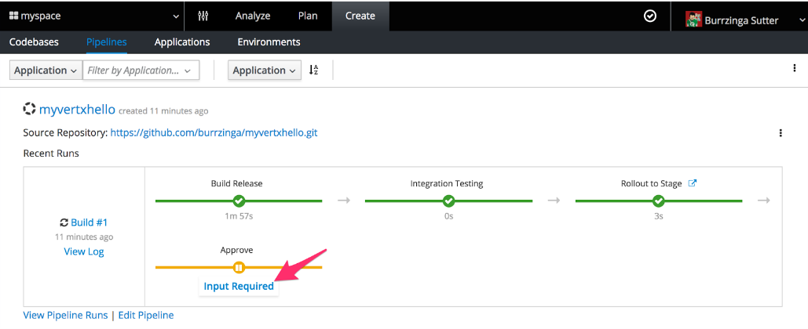
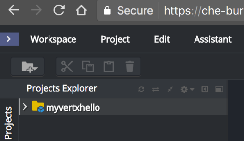
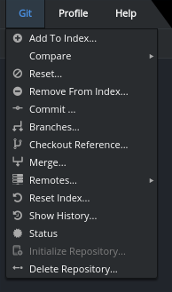
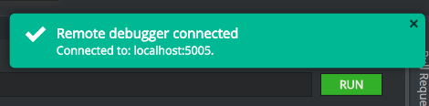
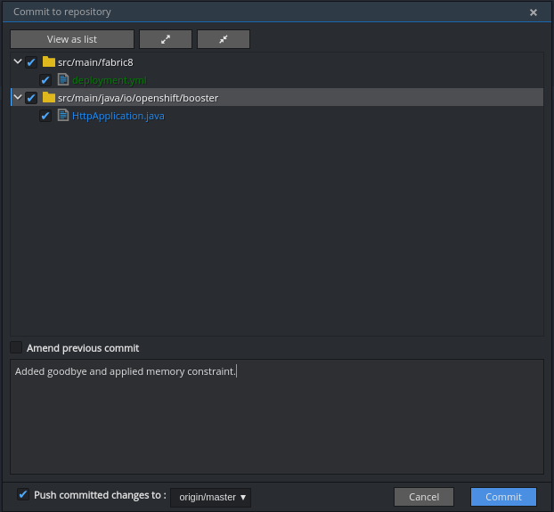
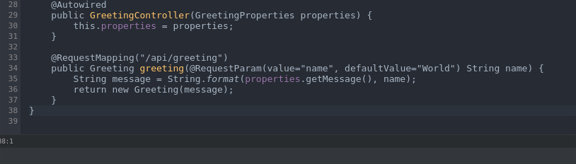

Before You Start
1. Getting Support
The OpenShift.io support chat channel is currently the best way to ask questions or get support for OpenShift.io at any time.
-
Sign up at https://chat.openshift.io/signup_email
-
Add your details and click Create Account to register.
-
In your email inbox, click the Verify Email link.
-
Sign in when prompted and you are redirected to the
#openshiftiochannel. -
Ask a specific person your question or start with
@hereto tag everyone present in the channel.
2. Prerequisites
Browser Requirements:
-
Currently, only Google chrome can be used with OpenShift.io. Additional browsers will be added here as they are tested.
-
Ensure that you run OpenShift.io in Chrome’s Incognito Mode. This is required because troubleshooting or other functions require clearing your browser’s history.
General Requirements:
-
Ensure that you have a GitHub account.
-
Sign up for an OpenShift Online account at https://www.openshift.com/.
-
Register to join the OpenShift.io developer preview at https://openshift.io/.
3. Connect OpenShift.io to OpenShift Online and GitHub
You will receive a welcome email when your request to join Red Hat’s OpenShift.io Developer Preview is accepted. When you receive this email, use the following steps to set up OpenShift.io:
-
Use Chrome’s Incognito mode to navigate to https://openshift.io/
-
Log in using your Red Hat Developer (or other listed services) credentials.
-
In the
Getting Started in OpenShift.iopage, select the GitHub and OpenShift.com check boxes and click Connect accounts. -
Log in to your GitHub account and, when prompted, click Authorize openshiftio-private to connect your GitHub account to your OpenShift.io account.
-
Log in to your OpenShift Online account and, when prompted, click Allow selected permissions to connect your OpenShift Online account to your OpenShift.io account.
-
You are redirected to the
Getting Started in OpenShift.iowith green check marks indicating that you have successfully connected your GitHub and OpenShift Online accounts. -
Click Get Started to start using OpenShift.io.
4. Confirm Che and Jenkins Status
After connecting your OpenShift Online account to OpenShift.io, the Che and Jenkins tenant services must be provisioned. This process requires several minutes. Use the following instructions to confirm that Che and Jenkins are ready to use:
-
To check the Che and Jenkins status, click the check mark icon at the top right of the page. If the status indicates that all services are ready (see screen capture), Che and Jenkins are provisioned.

-
Confirm the version numbers displayed for your Che and Jenkins are the most recent versions:
-
Confirm the latest Che version using the OpenShift.io GitHub repository.
-
Confirm the latest version of Jenkins by asking in the support channel (
#openshiftioon MatterMost). See support.html for details.
-
-
To update your Che and Jenkins versions:
-
In your OpenShift.io home page, click your name on the top right corner of the screen.
-
In the drop down options, click Profile.
-
In the profile page, click Update Profile.
-
Scroll to the bottom of the page and click Update tenant. This initiates an update in your OpenShift Online account.
-
Allow approximately five minutes for the version numbers in the status display to refresh. Yellow triangle icons (see screen capture) appear while tenant updates Che and Jenkins. When the update is complete, the green check marks appear with the updated version numbers for Che and Jenkins.

-
Start Using OpenShift.io
5. Hello World for Developers
5.1. Creating a New Space
In OpenShift.io, the first step for any new project is to create a new Space. Users can be assigned specific permissions for various Spaces and all the work done is in the context of the Space. Each Space must have a unique name. Create a new space as follows:
-
In the OpenShift.io home page, click Create a space.
-
In the dialog box, add a unique name for your space.
-
Use the drop-down menu for the
Templatesfield to select a template for your new Space. For this example, select Scenario Driven Planning and click Create. -
The
How would you like to get started?menu appears for your new space. If this menu does not appear automatically, use the following steps:-
Double-click the name of the relevant Space from the list under
Recent spaces. -
In the resulting
Analyzescreen for the Space, click Add to space in the top right corner to view theHow would you like to get started?menu.
-
5.2. Working With Pipelines
A new build/pipeline execution initiates immediately after a new Quickstart project is created. In a build pipeline, Stage and Run are individual OpenShift projects. Stage is a production staging area to review and test changes before they are finalized and staged on Run.
The new build pipeline pushes version 1.0.1 of your new project into Stage and then, after user approval, to Run.

Optionally, view the build pipeline’s details in OpenShift Online:
-
In the
Pipelinepage, clickBuild #1for the build pipeline in progress. -
When redirected, log into your OpenShift Online account.
-
Click View Log to view the Jenkins instance’s logs.

5.3. Viewing Your Project in GitHub
After reviewing your pipeline build running in OpenShift Online and OpenShift.io, view your project’s code in GitHub as follows:
-
Return to your Space’s dashboard. From the OpenShift.io home page, click the name of the Space to view its dashboard.
-
In the
Codebasespart of the dashboard, click the name of your project’s codebase. This takes you to your project’s code in GitHub.
-
To view the details for the pipeline’s staging and rollout, click Jenkinsfile.
For this example, view the details of the file and see the details for the rollout and staging.
5.4. Viewing the Pipeline’s Projects in OpenShift Online
To view the OpenShift Online projects that support your project’s pipeline, navigate to https://console.starter-us-east-2.openshift.com/. This page displays the following projects/namespaces that are created in OpenShift Online:
-
The username project is where your pipelines run. This project’s name is your OpenShift Online user name.
-
The username-che project is for your Che Host and workspaces.
-
The username-jenkins project is used for your Jenkins Master or your Jenkins Slaves. Click
Monitoringafter clicking this project to access your Jenkins console. -
The username-stage project is for your personal use. In this project, pods are displayed as pipelines that have been run. For maintenance, you can click this project and power down individual pods if required.
-
The username-run project is identical to the username-stage project and is used as an environment for experimenting with your OpenShift pods.
5.5. Approving the Build Pipeline
Several minutes after starting, your project’s build pipeline is ready to be promoted to Stage.
The build pipeline includes steps for a Stage build and a Run build. Stage is a production staging area to review and test changes before they are finalized and staged on Run.
To review the final changes in Stage and promote them to Run:
-
From your Space’s dashboard, click Create from the options at the top of the screen.
-
From the displayed options, click Pipelines.
-
Click the icon next to the
Rollout to Stagestep in the displayed pipeline. OpenShift Online provides this public URL to access the staged Quickstart project. -
Add a string to the text box and click Invoke to test the application.
-
Return to the OpenShift.io tab which displays the
Pipelineview. -
Click Input Required at the
Approvestage of the pipeline. -
Click Promote to promote the build from the public URL for Stage to the public URL for the Run namespace. The rollout process from Stage to Run requires several minutes. You can view the detailed progress in the OpenShift Online console view.
-
When the
Pipelineview indicates that the project is available in the Run namespace, click the icon next toRollout to Runto view the project in a new tab.
(Optional) Detailed Views:
-
A detailed view for the
Test,Stage, andRunenvironments is available in the Create > Environments tab. Opt in for this experimental feature in yourProfilepage to view each environment’s deployments, pods, events, and other information. -
A detailed view of your pipeline’s progress is available in your OpenShift Online account:
-
Navigate to https://manage.openshift.com/ in a new browser tab and log into your account.
-
Click OpenShift Console to view the console.
-
From the list of projects, click the username-jenkins option.
-
Click
Buildsand thenBuildsagain in the menu options. Your project’s new build is listed here and you can use this console to monitor its progress.
-
5.6. Using Work Items
Create a Work Item that tracks changing a string in a Quickstart project. Use the Planner view to create a new Work Item for your Space as follows:
-
Click your name on the top right side of the screen.
-
Click Profile in the displayed options.
-
Click Update Profile.
-
In the
Experimental Featurespart of the page, read the disclaimer and check theI agree to the terms above and would like to opt into experimental featuresoption and then click Update to use OpenShift.io’s experimental features. -
Click your user name on the top left side of the page.
-
Click the name of your new Space from the displayed options to return to that Space’s dashboard view.
-
Click Plan to see the Planner view for your Space. If experimental features have been enabled, the Planner view includes a green banner with the following message:
This feature is experimental. You can manage experimental features on your profile page. Got it! -
Click
Create Work Itemat the bottom of the screen. This is the fastest option to create a new Work Item.
5.7. Creating a Che Workspace
Create a new Che workspace for your project:
-
In your OpenShift.io space’s dashboard, click
Create. -
In the
Codebasesview, clickCreate workspacefor your project. -
When your workspace is ready, click Open to view your new workspace.

|
If a new tab does not appear, do not click
|
When loaded and ready to use, the new Che workspace tab includes your new project’s GitHub repository folder in the Project Explorer panel.

5.8. Prerequisites for Using Your Che Workspace
Before using the Che workspace, ensure that the following prerequisites are met:
-
Finish loading the workspace: Before editing a project in a Che workspace, ensure that the workspace has finished loading. If the
Project Explorerpane lists your project, the workspace has finished loading: -
Ensure Git commands are available:
-
Click
Gitin the workspace menu to ensure that all the listed commands (exceptInitialize Repository) are available. -
If they are not available, reload the workspace tab. The following screen capture shows a successfully loaded workspace’s Git menu:

-
-
Ensure your project is configured for Maven:
-
Click your project name to select it.
-
Click the
Projectoption from the menu options at the top of the page. -
Select
Update Project Configuration.
-
In the
Project Configurationwindow, selectMavenand click Save. -
Click the
runoption from the Run button ( ). For Vert.x projects, this sets server and the hot deploy option.
). For Vert.x projects, this sets server and the hot deploy option.
-
-
A run terminal appears at the bottom pane of the Che workspace. When the mvn build finishes executing, the
runview displays the following message:[INFO] INFO: Succeeded in deploying verticle -
Click the blue preview URL at the top of the
runview to view your project. -
Enter your name in the text box and click Invoke to test the application.
You are now viewing and interacting with a private sandbox for your project run in OpenShift Online. This is different from Stage and Run. See pipelines.html for details about Stage and Run. You can share this link with others to test your project in your sandbox environment.
5.9. Changing the Quickstart’s Code
You can change your project’s code and preview the results as follows:
-
In your Che workstation’s
Project Explorerview, navigate to the following file:src>main>Java>io.openshift.booster>HttpApplication.java. -
Find the following line in the file:
protected static final String template = "Hello, %s!"; -
Change Hello to Bonjour in the line:
protected static final String template = "Bonjour, %s!"; -
Save the changes using Ctrl+s (or Cmd+s for macOS).
-
Click the
runoption (). The following message displays when the run process is successfully completed:[INFO] INFO: Succeeded in deploying verticle -
Click the blue preview URL at the top of the
runview to view your project. -
Add a string to the text box and click Invoke to test the application.
-
In the GitHub repository page, click
Commitsto view all commits for your project and confirm that your recent changes are committed. -
Return to the OpenShift.io pipeline view. Your project has a new pipeline build in progress, which includes your new commit. When required, click
Input requiredand then click Promote to promote your build.
5.10. Commit and Push Changes to GitHub
After making the required changes, commit and push the changes to your project’s GitHub repository:
| Before committing your changes, ensure that your project’s pipeline build in OpenShift.io has successfully completed. See Approving the Build Pipeline for instructions. |
-
Click
Gitfrom the menu options. -
Select
Commitfrom the displayed Git options. -
In the commit dialog box:
-
Ensure that all the changed and new files are selected.
-
Add a commit message describing your changes.
-
Click Commit.
-
Alternatively, you can push your commit to a remote repository:
-
Click
Gitfrom the menu options. -
Select
Remote>Pushfrom the displayed Git options. -
In the dialog box, select the appropriate remote repository.
-
Click Push.
A success message appears in the top right corner of the tab when a push is successful.
5.11. Debugging Your Che Workspace
Return to your project’s Che workspace tab to learn to debug your project.
-
In your
HttpApplication.javafile, add the following in a new line after line 22.router. -
Use the Ctrl+Space shortcut to view the context-aware options for this line.
-
Select
get():Routefrom the options. This uses the Vert.x Router’s Get method. -
Edit the new line so that it includes the goodbye endpoint:
router.get("/api/goodbye").handler(this::goodbye); -
Add the following method for the goodbye endpoint in a new line after line 52:
private void goodbye(RoutingContext rc) { String name = rc.request().getParam("name"); if (name == null) { name = "World"; } JsonObject response = new JsonObject() .put("content", "Goodbye " + name); rc.response() .putHeader(CONTENT_TYPE, "application/run_debugjson; charset=utf-8") .end(response.encodePrettily()); } -
Use Ctrl+s (or Cmd+s for macOS) to save your changes.
-
Click the
runoption (). The following message displays when the run process is successfully completed:[INFO] INFO: Succeeded in deploying verticle -
Click
Terminaland enter the following command to test the new endpoint:curl localhost:8080/api/goodbyeThe following result appears if the changes were successful:
{ "content" : "Goodbye World" } -
In the
EXECbar on the top of the workspace page, click the stop button (a blue square icon) to stop the current run process.
5.12. Set Up the Debugger
Use your Che workspace’s Debugger feature to debug your project’s code.
-
Select the
debugoption in the Debug drop down menu:
-
In the new
debugtab, look for the following lines when the debugging starts:[INFO] The application will wait for a debugger to attach on debugPort 5005 [INFO] Launching Vert.x Application [INFO] Listening for transport dt_socket at address: 5005
-
When the debug process completes, click
Runfrom the menu at the top of the page. -
Select
Edit Debug Configurations. -
Click the + icon for the
JAVAitem in the dialog box. -
Change the
Portvalue to 5050. -
Click Save and then Close.

-
Create a new breakpoint for your method by clicking on the line number for the following line in your project’s code:
if (name == null) {
Click the
Debugview’sBreakpointsaddition to confirm the new breakpoint is added.
The Debugger is now set up for your project.
5.13. Run the Debug Command
After setting up the Debugger, use the Debug command for your project:
-
Click
Runfrom the menu options. -
Select the
Debugoption and then theRemote Javaoption. -
A message appears when the Remote debugger successfully connects.
If your Remote Debugger connection fails, restart your Chrome browser and use a new Incognito tab to try again. -
Click
Terminalto view the terminal tab. -
Run the following command to start debugging:
curl localhost:8080/api/goodbyeYou can now review variables in the Debug tab. You can also use the Resume, Step Into, Step Over, and Step Out option during the debugging process.
5.14. Reduce the Hello World Project’s Memory Usage
You can optimize your new quickstart to use less memory. This is particularly important when using OpenShift Online’s Free Tier because it includes limited memory.
-
In the Che workspace, expand the
src>main>fabric8folders for your project. -
Right-click the
fabric8folder icon and selectNew>File. -
Name the new file deployment.yml and click OK. The new file displays in the editor.
-
Copy the contents of the following file to your new yaml file: deployment.yaml.
Spaces are meaningful in yaml files. Ensure that the correct spacing is copied into your yaml file from the link. -
Use Ctrl+s (or Cmd+s for macOS) to save your changes.
-
Click
Gitin the menu on top of the page and then selectCommit. -
In the dialog box:
-
Ensure that both the changed files are selected to be included in the commit.
-
Add a commit message.
-
Select the
Push committed changes to origin/masteroption. -
Click Commit..

-
Monitor your OpenShift Online account’s quota usage using the OpenShift CLI (oc) tool:
-
Navigate to https://console.starter-us-east-2.openshift.com/console/ in your browser.
-
In the OpenShift Console, click the ? icon next to your user name.
-
From the menu options, click
Command Line Tools. -
Use the download links from the
Command Line Toolspage for your operating system and install oc tools. -
In your computer’s terminal (not the
Terminaltab for your workspace), run the following command:oc login https://console.starter-us-east-2.openshift.com/ -
Use the following command during and after the new pod is used in OpenShift to monitor and compare resource usage:
oc get quota compute-resources -o yaml -n <username>-stageAn example of the output for this command is as follows:
status: hard: limits.cpu: "2" limits.memory: 1Gi used: limits.cpu: "1" limits.memory: 512Mi -
Committing and pushing your new yaml file triggers a new pipeline build for your OpenShift.io project. When the pipeline build is rolled out to Stage, execute the following command again to see the change in memory usage:
oc get quota compute-resources -o yaml -n <username>-stageAn example of the output for this command after committing the yaml file is as follows:
status: hard: limits.cpu: "2" limits.memory: 1Gi used: limits.cpu: 488m limits.memory: 250Mi
Optimizing memory usage is particularly important when creating more than one project in OpenShift.io. Each additional project requires an additional share of your OpenShift Online resources. For OpenShift Online’s Free Tier, see [cleanup_sb.adoc##cleanup_sb] to reset your OpenShift Online and OpenShift.io accounts after creating two projects.
6. Spring Boot Quickstart Tutorial
6.1. Creating a Spring Boot Quickstart Project
-
In your OpenShift.io home page, double-click your new space.
-
In your space’s dashboard, click Add to space.
-
Select
Create a new Quickstart project. -
In the new project menu:
-
Select
Spring Boot - Basicfrom theTechnology Stackoptions. -
Add the name myspringboot to the
Namefield. -
Click Finish. See hw_dev.html for instructions for the remaining steps in this wizard. However, for this tutorial, use the default values or click Finish to skip these steps.
-
-
When the project is created, click Ok to continue.
6.2. Stopping Existing Workspaces
Before creating a workspace for your project, ensure that the workspace for your previous project is stopped. Each running workspace uses your OpenShift Online resources. As a result, older workspaces must be stopped before creating new workspaces.
Review the workspace in your OpenShift Online account as follows:
-
In your Space’s dashboard, click Create.
-
In the
Codebasesview, click Open for the older project’s workspace. Allow several minutes for the project to load. -
Stop the current workspace in one of two ways:
-
Click the
Workspaceand selectStopfrom the options. -
Alternatively, within the target workspace:
-
Click > next to the
Workspacemenu item on the left side of the workspace.
From the displayed list of all previously created workspaces, a green dot next to the name indicates if a workspace is not stopped.
-
For a running space, click the stop icon under
ACTIONS.
-
-
Your old workspace’s resources are now reclaimed in your OpenShift Online account.
6.3. Creating a Workspace for the Spring Boot Project
Ensure that any running workspaces are stopped, then create a new workspace:
-
Return to the space dashboard in OpenShift.io.
-
Click
Createto view theCodebasespage. -
Click
Create workspacefor your Spring Boot project. Ensure that pop ups are allowed and the new workspace launches automatically in a new tab.If a new tab does not appear, do not click
Create Workspaceagain because this creates an additional (unnecessary) workspace and wastes your OpenShift Online resources. The new tab does not display if your browser has blocked the pop up that creates this new workspace. To resolve this:-
Click the blocked pop up icon in your browser’s URL field.
-
Select the
Always allowoption for pop ups from OpenShift.io (see screen capture). -
Click the new workspace URL in the same dialog box to display the new Che workspace in a new tab.

-
-
When the workspace is ready, click Open to view the new workspace.
-
In your new workspace, click the
Terminaltab and run the following command:cd myspringboot mvn testWhen the maven test succeeds, the
BUILD SUCCESSmessage appears in the terminal view. You can only commit and push changes to your GitHub repository after the maven test succeeds. -
In the
Project Explorerview, double-click thesrc>main>java>io.openshift.booster>servicefolders. -
Double-click the
GreetingController.javafile to view it in the editor. -
Add a line break at line 38, then type @ and then use Ctrl+Space to view a list of context-sensitive options.
-
From the list, select
RequestMapping. -
Edit the code to include the following code:
@RequestMapping("/api/goodbye") public String goodbye(@RequestParam(value="name", defaultValue="World") String name) { return "Goodbye " + name + " " + new java.util.Date(); }The added code appears as follows:
 -
Save your changes using Ctrl+s (or Cmd+s for macOS). .
-
Click the
runoption (). This sets up the Spring Boot server. Unlike the Vert.x Quickstart project, the hot deploy option is not available for Spring Boot projects. -
In the
runterminal, the mvn build command runs and downloads the required dependencies. When complete, therunview displays the following message:[INFO] INFO: Succeeded in deploying verticle -
Click the blue preview URL at the top of the
runview to view your project. -
Append the following string to the preview URL in your browser:
/api/goodbye?name=Samwell%20Gamgee -
If successful, the amended preview URL displays the following:

6.4. Reduce the Boot Spring Project’s Memory Usage
Your OpenShift.io space now has two quickstart projects running: the Hello World Vert.x project and the new Spring Boot project. Both projects use the same limited memory resources in OpenShift Online. As a result, you must reduce the memory usage for both projects.
See opt_mem.html to optimize memory usage for the Hello World project and use the following instructions for the Spring Boot project:
-
In your Che workspace, expand the
src>main>fabric8folders. -
Right-click the
fabric8folder and selectNew>File. -
Name the new file deployment.yaml.
-
Copy the following to your new yaml file: deployment.yaml.
Spaces are meaningful in yaml files. Ensure that the correct spacing is copied into your yaml file from the link. -
Use Ctrl+s (or Cmd+s for macOS) to save your changes.
6.5. Commit and Push Changes to GitHub
After making the required changes, commit and push the changes to your project’s GitHub repository:
| Before committing your changes, ensure that your project’s pipeline build in OpenShift.io has successfully completed. See Approving the Build Pipeline for instructions. |
-
Click
Gitfrom the menu options. -
Select
Commitfrom the displayed Git options. -
In the commit dialog box:
-
Ensure that all the changed and new files are selected.
-
Add a commit message describing your changes.
-
Click Commit.
-
Alternatively, you can push your commit to a remote repository:
-
Click
Gitfrom the menu options. -
Select
Remote>Pushfrom the displayed Git options. -
In the dialog box, select the appropriate remote repository.
-
Click Push.
A success message appears in the top right corner of the tab when a push is successful.
6.6. Clearing Up Your OpenShift Online Account
OpenShift.io generates artifacts within five projects (Kubernetes namespaces) in OpenShift Online. These artifacts use a significant amount of the limited resources available with OpenShift Online’s Free Tier. Reset your OpenShift.io and Openshift Online account resources as follows:
-
Delete your OpenShift.io spaces:
-
In the OpenShift.io home page, click your name in the top right part of the page.
-
Click Profile from the displayed options.
-
In the
Profilepage, clickSpaces. -
Click Delete and then Remove for each of the listed spaces.
Deleting the spaces does not remove the GitHub repositories created for each of these spaces.
-
-
Reset your OpenShift.io environment:
-
In your
Profilepage, click Update Profile. -
Click Reset Environment. A warning page appears with a summary of your OpenShift.io account.
-
Click Erase my OpenShift.io Environment.
-
In the dialog box, add your OpenShift.io user name and click I understand my actions - erase my environment.
-
After the environment is successfully erased, click the check mark icon in the top right side of the page to see the
JenkinsandChestatus.
-
After successfully completing these steps, your OpenShift.io and OpenShift Online account resources are reset and ready for use with a new project.
7. Importing an Existing Project from GitHub
As an alternative to creating a new quickstart project, you can add an existing project in GitHub to OpenShift.io as follows:
7.1. Forking a Repository
For this tutorial, fork for one of the following example repositories:
| OpenShift Online’s Free Tier only includes two pods and each project uses one pod. WHile you can import all these projects into OpenShift.io, but importing all three simultaneously causes delays of 12-15 minutes in the import processes. |
7.2. Creating a Space and Import Your Project
-
In OpenShift.io, click the + icon in the spaces view to create a new space and name it myspace.
-
After the space is created, click
Import existing codein the welcome dialog. -
Select an
Organizationfrom the drop down options. The default (and recommended for this tutorial) option is your personal github account’s name. -
Click Next.
-
Select the forked
vertx-eventbusrepository from the options listed and click Finish. -
Click OK at the success screen.
7.3. Creating a Che Workspace
Create a new Che workspace for your project:
-
In your OpenShift.io space’s dashboard, click
Create. -
In the
Codebasesview, clickCreate workspacefor your project. -
When your workspace is ready, click Open to view your new workspace.
|
If a new tab does not appear, do not click
|
When loaded and ready to use, the new Che workspace tab includes your new project’s GitHub repository folder in the Project Explorer panel.
7.4. Prerequisites for Using Your Che Workspace
Before using the Che workspace, ensure that the following prerequisites are met:
-
Finish loading the workspace: Before editing a project in a Che workspace, ensure that the workspace has finished loading. If the
Project Explorerpane lists your project, the workspace has finished loading: -
Ensure Git commands are available:
-
Click
Gitin the workspace menu to ensure that all the listed commands (exceptInitialize Repository) are available. -
If they are not available, reload the workspace tab. The following screen capture shows a successfully loaded workspace’s Git menu:
-
-
Ensure your project is configured for Maven:
-
Click your project name to select it.
-
Click the
Projectoption from the menu options at the top of the page. -
Select
Update Project Configuration.
-
In the
Project Configurationwindow, selectMavenand click Save. -
Click the
runoption from the Run button (). For Vert.x projects, this sets server and the hot deploy option.
-
-
A run terminal appears at the bottom pane of the Che workspace. When the mvn build finishes executing, the
runview displays the following message:[INFO] INFO: Succeeded in deploying verticle -
Click the blue preview URL at the top of the
runview to view your project. -
Enter your name in the text box and click Invoke to test the application.
You are now viewing and interacting with a private sandbox for your project run in OpenShift Online. This is different from Stage and Run. See pipelines.html for details about Stage and Run. You can share this link with others to test your project in your sandbox environment.
7.5. Changing the Quickstart’s Code
You can change your project’s code and preview the results as follows:
-
In the
Project Explorerview, double-click the following directories to expand them:src>main>Java>io.openshift.booster. -
In your project’s
HttpApplication.javafile, find the following line:protected static final String template = "Aloha !!, %s!"; -
Add more exclamation marks. The line should now be:
protected static final String template = "Aloha !!!!!, %s!";The code includes a new route for eventbus and its supporting method. These set up eventbus to allow outbound-only communications for the my-feed channel. Any messages arriving in the my-feed channel are pushed to the browser using this SockJS bridge. This project includes a vertx-eventbus.jsfile along with theindex.htmlfile and also includes tweaks to theindex.html. -
Save the changes (Ctrl+s or Cmd+s for macOS).
-
Click the
runoption from the Run button (). The following message appears when the run process completes:[INFO] INFO: Succeeded in deploying verticle -
Click the blue preview URL at the top of the
runview to view your project. -
Enter your name in the text box and click Invoke to test the application.
7.6. Commit Your Changes
|
Before attempting to commit your changes, ensure that your project’s pipeline build in OpenShift.io has successfully completed. If this is at the approval stage, click Promote to promote the build from 
|
-
In your project’s Che workspace, click
Gitfrom the options at the top of the screen. -
Click
Commitfrom the Git options. -
In the
Commit to repositorydialog:-
Ensure that all changed files are selected.
-
Add a commit message. For this example, use Changed greeting to Bonjour.
-
Select the
Push commit changes to: origin/masteroption. -
Click Commit.

When successful, a message appears to confirm the push to the GitHub repository.
-
-
Alternatively, you can push your commit to a remote repository:
-
Click
Gitfrom the menu. -
From the Git options, select
Remoteand thenPush. -
In the dialog box, select the appropriate remote repository and then click Push. A message appears when the push is successful.
-
-
After pushing your changes, navigate to your project’s GitHub repository to view changes.
If needed, find the link for your project’s GitHub repository as follows: -
Return to the OpenShift.io tab in your browser.
-
Click
Createand then theCodebasesoption. -
From the list of codebases for your space, click the name of your current project. The GitHub repository for the project appears in a new tab.
-
-
In the GitHub repository page, click
Commitsto view all commits for your project and confirm that your recent changes are committed. -
Return to the OpenShift.io pipeline view. Your project has a new pipeline build in progress, which includes your new commit. When required, click
Input requiredand then click Promote to promote your build. You can also monitor the build’s progress in your OpenShift Online account:-
Navigate to https://manage.openshift.com/ in a new browser tab and log into your account.
-
Click OpenShift Console to view the console.
-
From the list of projects, click the username-jenkins option.
-
Click
Buildsand thenBuildsagain in the menu options. Your project’s new build is listed here and you can use this console to monitor its progress.
-
TODO with modules